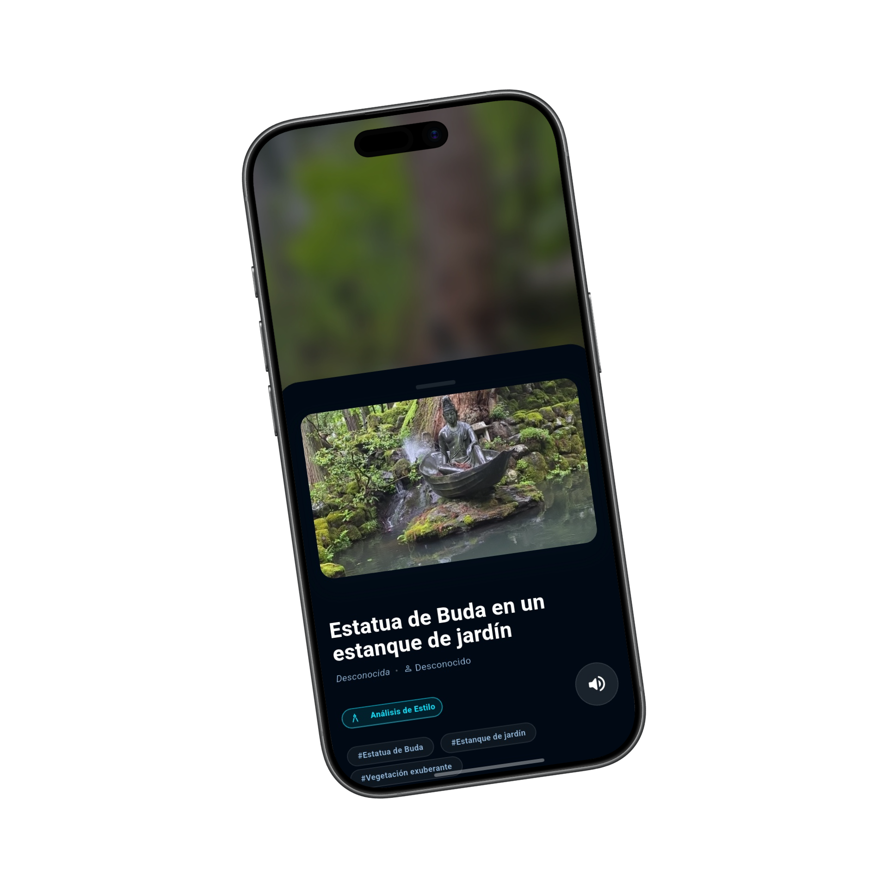
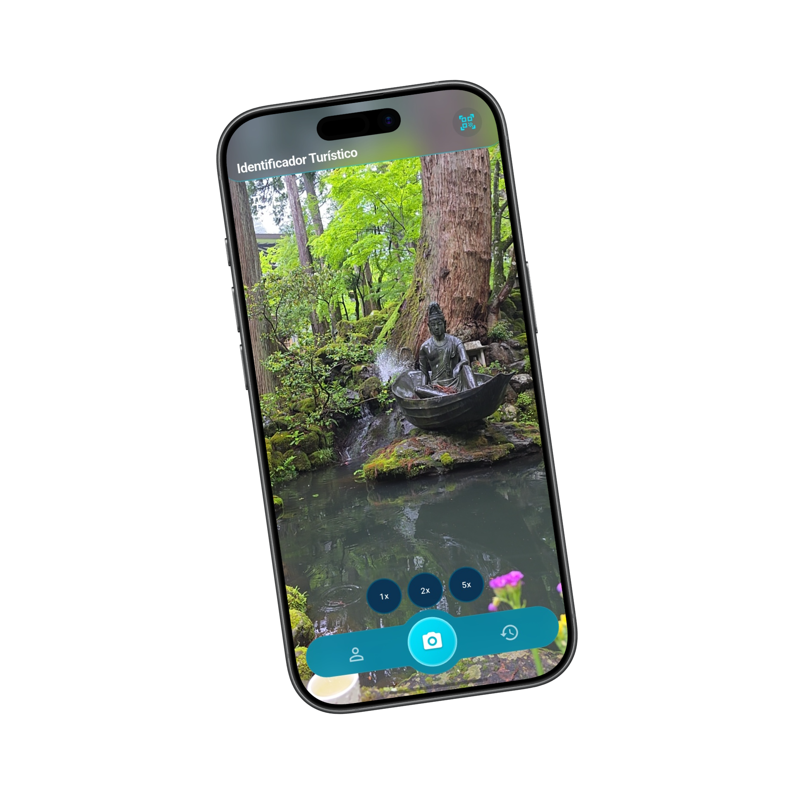
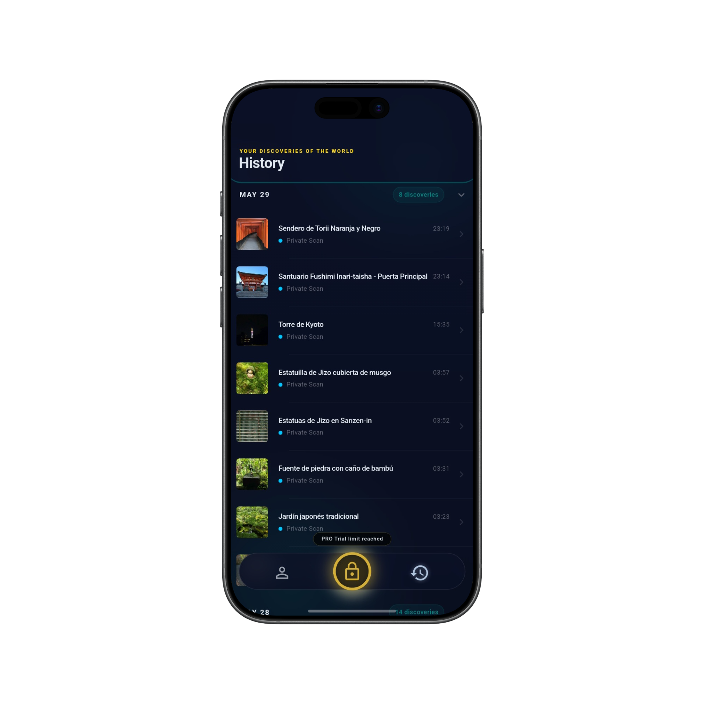
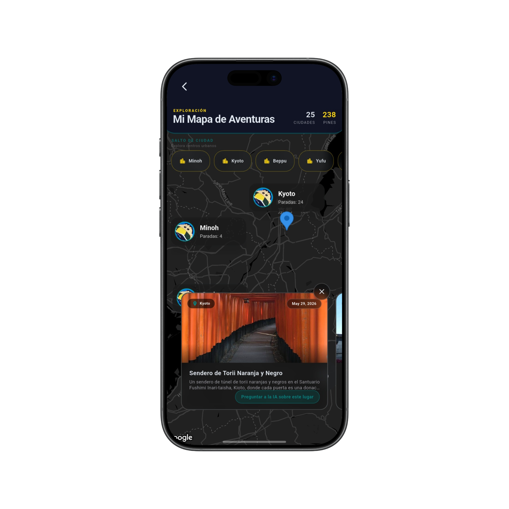
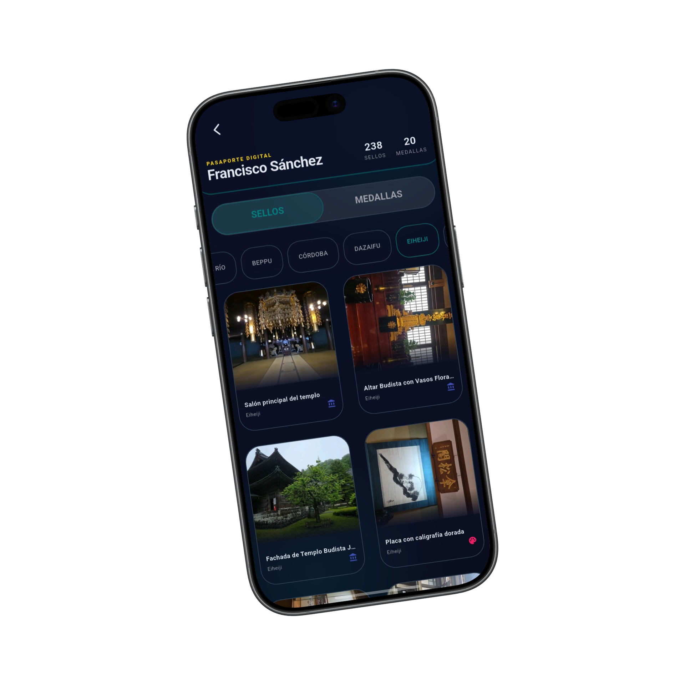

Por qué Tourist Lens
Identificación instantánea
Sabes qué estás viendo en tiempo real, con una puntuación de confianza fiable.
8 idiomas
Cada narración, traducida y narrada en tu idioma.
Privacidad primero
Un filtro en el dispositivo revisa cada imagen antes de que salga de tu teléfono.
Pases, no suscripciones
Paga por tiempo cuando viajas. Sin renovación automática, nunca.
Míralo tal como lo usarás
Pantallas reales de Tourist Lens — apunta, identifica y explora.
Sabes qué estás viendo
Apunta a cualquier monumento y Tourist Lens lo identifica en tiempo real, con una puntuación de confianza en la que puedes confiar.
- Monumentos, esculturas y detalles ocultos
- Ordenado por confianza, nunca una suposición
- El filtro de privacidad en el dispositivo se ejecuta primero


La historia detrás de la piedra
Escucha una historia rica y fundamentada de cada lugar — y luego pregunta lo que quieras. Es un guía local que cabe en tu bolsillo.
- Narrado en 8 idiomas
- Haz preguntas de seguimiento en lenguaje natural
- Cada descubrimiento se guarda en tu historial

Cada captura, en el mapa
Tus descubrimientos cobran vida en un mapa dinámico — una versión viva de tu historial. Desliza por tus capturas y el mapa viaja contigo, marcando exactamente dónde se tomó cada foto.
- Un mapa dinámico de todo lo que has identificado
- Desliza el carrusel — el marcador sigue cada foto
- Tu historial de viaje, lugar por lugar

Colecciona cada lugar que descubras
Sella un pasaporte digital mientras exploras y desbloquea escaneo ilimitado con pases honestos por tiempo.
- Paga por tiempo, no por suscripciones
- Descubrimientos cifrados en tu dispositivo
- Sin renovación automática, sin sorpresas

Privacidad, por diseño
Un modelo local revisa cada imagen en tu dispositivo antes de enviarla. Tus datos son tuyos — cifrado AES-256 y certificate pinning, de principio a fin.
Tu próximo viaje, ya narrado.
Gratis para empezar. Sin cuenta necesaria. Apunta tu cámara y deja que Tourist Lens te cuente la historia.